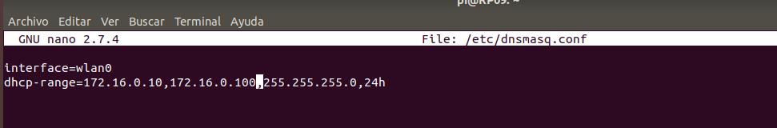
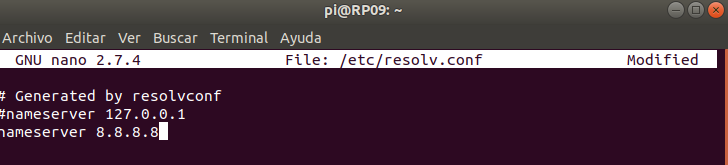
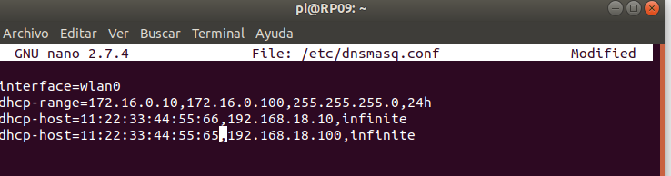
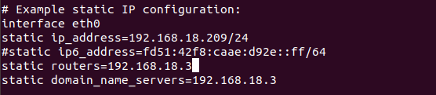

Para instalar el udhcpd ponemos sudo apt-get install udhcpd.
Para configurar los rangos vamos al fichero etc/dnsmasq.conf y ponemos dhcp-range=172.16.0.10,172.16.0.100,255.255.255.0,24h así tiene que quedar esa línea, el 24 h quiere decir que esa IP dure ese tiempo.
Configura para que los servidores DNS sean los de Google.

Vamos al fichero sudo nano etc/resolv.conf y ponemos ahí nameserver 8.8.8.8 que son los servidores de google y guardamos.
Configura para que dos clientes obtengan siempre las direcciones 10 y 100 respectivamente.

Vamos al documento etc/dnsmasq.conf y ponemos
dhcp-host=11:22:33:44:55:66,192.168.18.10,infinite este quiere decir que le asignaremos la IP 192.168.18.10 al pc cuya dirección mac es 11:22:33:44:55:66 y con el otro host igual.
Configura el servidor para que la puerta de enlaces sea la IP de la interfaz inalámbrica de la raspberry pi.

Lo que hago es en el fichero etc/dhcpcd.conf donde pone 192.168.18.3 que eso es la puerta de enlace pongo ahí la IP de mi raspberry, la cual seria 192.168.18.209
Configura el servidor para que el tiempo de concesión sea un 1 día.
De esto se hace cargo la 2 parte de el dhcp-range en el fichero /etc/dnsmasq.conf donde pone 24h quiere decir que el tiempo de concesión es 24h.
Lanza el wireshark en la raspberry pi, e interpreta todas las señales originadas en el tráfico DHCP.
No me funciona wireshark en raspberry, me da errores.